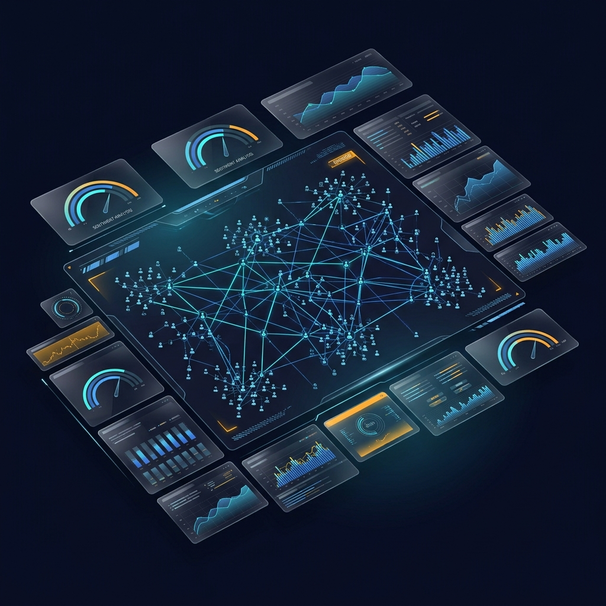

Validate product-market fit, predict regulatory friction, and generate engineering-ready specs — using autonomous AI simulation and adversarial boardroom debate. Before writing a single line of code.
From raw data ingestion to executive-grade decision artifacts — every layer is autonomous, adversarial, and grounded in real user behavior.
Builds psychologically-grounded user personas with cognitive biases, social interaction patterns, and distinct value systems — not just demographic profiles.
Spins up hundreds of synthetic users in a simulated social environment. They interact, argue, post, and comment — generating high-fidelity behavioral data that predicts real adoption.
Autonomous executives debate with anti-sycophancy measures and logit-bias manipulation. Every claim is verified against actual simulation data from the Hindsight Memory Bank.

Watch synthetic users interact, track sentiment shifts, and see executive decisions materialize — all in a unified dashboard.
A highly orchestrated flow of autonomous intelligence that transforms enterprise feedback into validated, deployment-ready artifacts.
RAG-enhanced parsing of Zendesk, Slack, and customer interviews into tension clusters and feature proposals
Deep persona creation followed by large-scale OASIS social simulation with hundreds of synthetic users
Adversarial AG2 boardroom with anti-sycophancy measures, grounded in real simulation data via Hindsight Memory
Auto-compiled PRDs with UI changes, data model updates, integration tests, and monitoring plans
Join the early access program and run your first autonomous simulation in under 5 minutes.